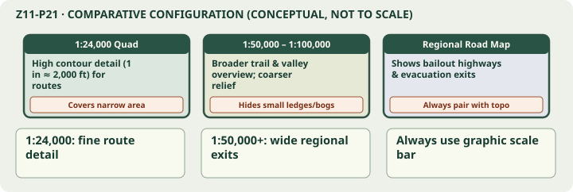

Z11-P21 · Navigation, weather and rescue · New manuscript
Distinguish USGS 1:24,000, 1:50,000 and regional trail map scales
Choose the right map scale for detailed terrain navigation versus broad regional exit planning.
When it applies · Selecting paper or offline topographic maps before backcountry travel or disaster evacuation.
Equipment · Detailed quadrangle map (e.g., 1:24,000) and regional overview map showing surrounding highways and towns.

Actions
- Understand map scale fractions: a 1:24,000 USGS quadrangle shows fine terrain detail (1 inch ≈ 2,000 feet) ideal for off-trail or complex forest navigation, whereas 1:50,000 or 1:100,000 maps cover wider territory with fewer small contours.[N01, N02]
- Always measure distances using the printed graphic scale bar on the map margin—graphic bars stay accurate even if a sheet is enlarged or reduced on a printer, whereas ruler ratios break when scaled.[N01, ED]
- Pair one detailed route map with a broader regional road/park overview so unexpected detours or wildfire/flood evacuations never run off the edge of your only sheet.[N01, T13, ED]
Failure recognition · Printing a zoomed screenshot with no scale bar, or hiking into complex ridge terrain with only a 1:250,000 highway overview map.[N01, N02]
Verify · Confirm your primary sheet includes a printed graphic scale bar, sufficient contour detail for terrain and coverage of surrounding bailout roads.[N01, N02, ED]
Stop or change course · Do not rely on unscaled sketch maps or tiny park brochure cartoons for remote backcountry navigation.[N01, E01]
Evidence and editorial notes
- E01 · Minnesota DNR · Safety in State Forests (current web edition)
- Section: Before your trip and while visiting · Conditions: State-forest travel and backcountry planning
Support: Know the route, check conditions, carry navigation and safety equipment and share trip details.
Limitations: Conditions and trail maintenance vary seasonally across forest units. · Conflicting evidence: None; aligns with NPS-H.
Editorial note: Foundation for trip planning and pre-departure risk checks. · Specialist reviewer: Land management and search and rescue
Primary source · checked 2026-11-24 - N01 · USGS · US Topo Maps for America (current web edition)
- Section: US Topo Maps > Coordinate Grids, Scale and Currency · Conditions: Map reading and trip planning in the United States
Support: USGS topographic maps provide elevation contours, hydrography, roads, land cover and scale/date metadata; check publication date because trails, roads and structures change over time.
Limitations: Historical topo sheets (such as 1965 Ely quadrangle) illustrate symbols only and never establish current routes or declination. · Conflicting evidence: None; aligns with USGS-MAP-R and NOAA-D.
Editorial note: Grounds map margin, scale, date and historical-excerpt limits in Z11. · Specialist reviewer: Cartography and navigation
Primary source · checked 2026-11-24 - N02 · USGS · Topographic Map Symbols (agency PDF)
- Section: Topographic Map Symbols > Contours, Water, Vegetation and Boundaries · Conditions: Interpreting standard USGS 1:24,000 and US Topo map sheets
Support: Contour spacing indicates slope steepness, index contours give elevation values, blue features mark water/wetlands and standard symbols distinguish roads, trails, cliffs and marshes.
Limitations: Small terrain hazards (boulders, undercut banks, fallen timber, thin ice) fall below map contour interval resolution. · Conflicting evidence: None; anchors terrain and contour interpretation cards.
Editorial note: Explains contour reading alongside map-resolution limitations. · Specialist reviewer: Cartography and search and rescue
Primary source · checked 2026-11-24 - T13 · FEMA / Ready.gov · Evacuation (current web edition)
- Section: Evacuation > Before, During, and After Evacuation · Conditions: Developing wildfire, flood, storm, or infrastructure emergency
Support: Identify multiple exit routes ahead of time, keep essential go-bags and fuel ready, leave promptly when authorities order evacuation, and do not return until officials declare the area safe.
Limitations: Late departure can trap groups behind road closures, smoke, or rising water. · Conflicting evidence: None; pairs with NWS-FLOOD and READY-WILDFIRE.
Editorial note: Establishes clear leave-early decision thresholds for multi-hazard scenarios. · Specialist reviewer: Emergency management
Primary source · checked 2026-11-24
Source lineage · USGS US Topo and map FAQ; new manuscript · Classification · New manuscript.